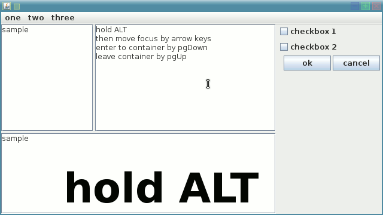

Library that allows you to change the input focus by using keyboard arrows.
Main concept is to adding a focus-change mode, which is toggled by holding key, for example ALT. In focus-change mode, keyboard focus can be moved betwewn components by keyboard arrows, ang page-up/page-down keys.
